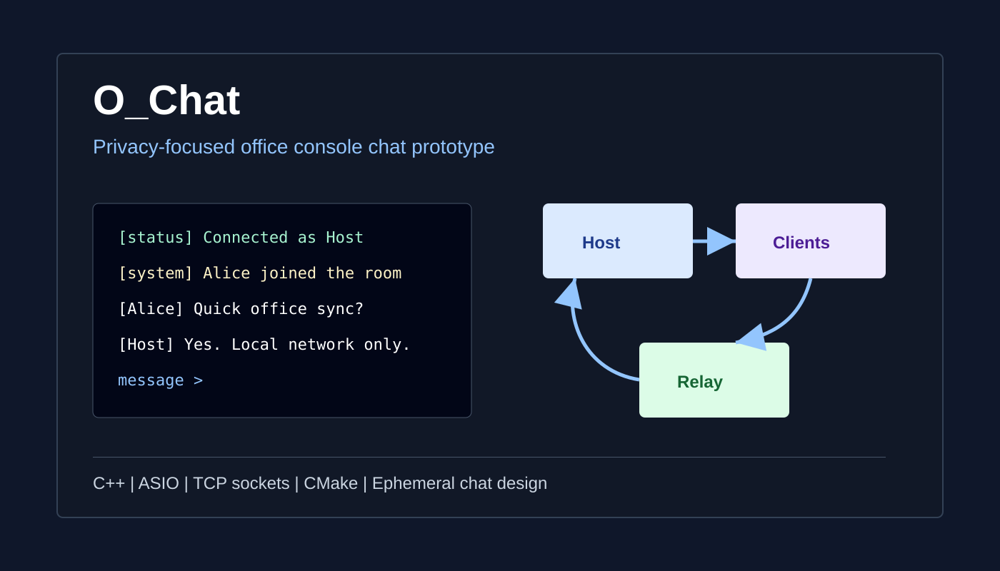

O_Chat
A small office chat app I built in C++

What I Built
A local-network console chat app where one machine hosts a room and multiple users join with the host IP.
- Host/join mode in one executable.
- Multi-client TCP message relay.
- No saved database or chat log.
What Made It Interesting
- I had to split server and client event loops so the host could also chat.
- A signed
shortoverflow broke port54000. - Async messages forced me to clean up the console UX.